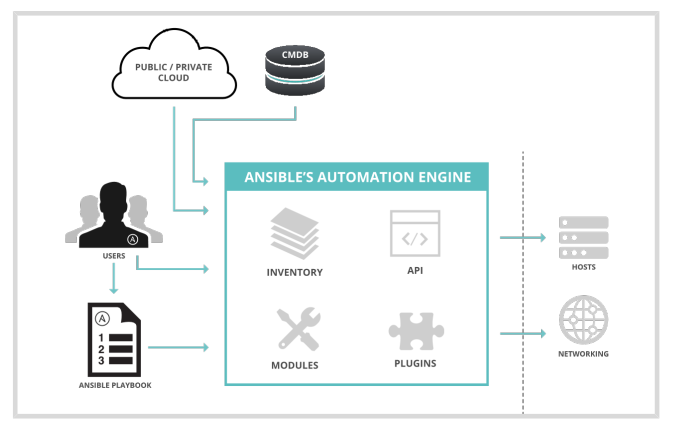

5 Server Administrator III - RH294
5.1 Intro to Ansible
Ansible is an open source automation platform. It is a simple automation language that can perfectly describe an IT application infrastructure in Ansible Playbooks. It is also an automation engine that runs Ansible Playbooks.
5.1.1 Ansible Concepts and Architecture
- Control nodes : Where Ansible is installed and runs and has copies of Ansible project files, also can be an Administrator server, where Tower will run.
- Managed hosts : list of servers organized in inventory list
- Inventory :
- Static : List of servers
- Dynamic : Program that connect to provider and search for list of machines
- Playbook : List of tasks that going to be converted in python script to run in each host, those tasks are expressed in YAML format in a text file
5.1.2 Install Ansbile
- To install ansible
yum install ansbile- To check version
ansbile --version- RHEL8 can use the plataform python package
yum list installed plataform-python- To register on RedHat and Enable repository
subscription-manager register
ubscription-manager repos --enable ansible-2-for-rhel-8-x86_64-rpms- To install python36
yum module install python36- To list the modules
ansible-doc -l5.1.3 Implementing an Ansible Playbook
5.2 Deploying Anisble and Implementing Playbooks
5.2.1 Building an Ansible Invetory
Static inventory file is a text file that specifies the managed hosts that Ansilbe targets, it is located on /etc/ansible/hosts as default
Sample of YAML file
web1.example.com
web2.example.com
db1.example.com
db2.example.com
192.0.2.42We can also organize the inventory in groups using [], ,hosts can be in multiple groups
[webservers]
web1.example.com
web2.example.com
192.0.2.42
[db-servers]
db1.example.com
db2.example.comWe also can configure nested groups with :children sufix
[usa]
washington1.example.com
washington2.example.com
[canada]
ontario01.example.com
ontario02.example.com
[north-america:children]
canada
usaThe hosts can also be specified with Ranges [START:END]
[usa]
washington[1:2].example.com
[canada]
ontario[01:02].example.comTo verify the inventory we can use the commands below
# his command verify if machine is present in inventory
ansible washington1.example.com --list-hosts
# List all hosts in canada group
ansible canada --list-hosts
To list from an specific inventory file, -i makes ansible use your inventory file in the current working directory instead of the system /etc/ansible/hosts inventory file
ansible all -i inventory --list-hosts
List ungrouped hosts
ansible ungrouped -i inventory --list-hostsList hosts from specific group called us
ansible us -i inventory --list-hostsList inventory as a graph
ansible-invetory --graph -i /etc/anisble/hosts5.2.2 Managing Ansible Configuration Files
The ansible configuration file is located at /etc/ansible/ansible.cfg as default, but ansible looks at ~/.ansible.cfg that overight the default, however if the ./ansible.cfg exists in the directory in which the ansible command is executed, it is used instead of the global file or the user personal file. We can also configure the environment variable ANSIBLE_CONFIG to set the ansible.cfg , in this case all commands going to point to this config file.
To list the config file
ansible --version
ansible servers --list-hosts -v
To list the ansible config
anisble configSample of config file
[defaults]
inventory = ./inventory
remote_user = user
ask_pass = fals
[privilege_escalation]
become = true
become_method = sudo
become_user = root
become_ask_pass = false- inventory : Specifies the path to the inventory file.
- remote_user : The name of the user to log in as on the managed hosts. If not specified, the current user’s name is used.
- ask_pass : Whether or not to prompt for an SSH password. Can be false if using SSH public key authentication.
- become : Whether to automatically switch user on the managed host (typically to root) after connecting. This can also be specified by a play.
- become_method : How to switch user (typically sudo, which is the default,but su is an option).
- become_user : The user to switch to on the managed host (typically root, which is the default).
- become_ask_pass : Whether to prompt for a password for your become_method. Defaults to false.
To list all the config options we can read the /etc/ansible/ansible.cfg or run the command below to dump
ansible-config dumpSample of ansible playbook to deploy a public key
- name: Public key is deployed to managed hosts for Ansible
hosts: all
tasks:
- name: Ensure key is in root's ~/.ssh/authorized_hosts
authorized_key:
user: root
state: present
key: '{{ item }}'
with_file:
- ~/.ssh/id_rsa.pub5.2.3 Running Ad Hoc Commands
- Sample date command to a host
ansible servera.lab.example.com -m command -a date- List the modules
ansile-doc -l- Check documentation for a module
ansible-doc <module_name>- Using the module user to create and remove a user
# create
ansible <server> -m user -a name=<name_of_user>
# remove
ansible <server> -m user -a "name=<name_of_user> state=absent"- Specfing user and become to copy as root
ansible all -m copy -a 'content="Managed by Ansible\n" dest=/etc/motd' -u devops --become5.2.4 Writing and Running Playbooks
- Using command
[student@workstation ~]$ ansible -m user -a "name=newbie uid=4000 state=present" servera.lab.example.com- Using playbook
---
- name: Configure important user consistently
hosts: servera.lab.example.com
tasks:
- name: newbie exists with UID 4000
user:
name: newbie
uid: 4000
state: present- Tip for configure
vimas editor
vim ~/.vimrc
# add
autocmd FileType yaml setlocal ai ts=2 sw=2 et nu cuc
autocmd FileType yaml colo desert
5.2.5 Running Playbooks
Simple Command
ansible-playbook site.ymlWe can increase the verbosity of output using -v, -vv , -vvv or -vvvv and also **check the syntax* like:
ansible-playbook --syntax-check xxx.ymlAnother option is execute as a Dry Run using option -C
ansible-playbook -C xxx.yml
5.2.6 Implementing Muliple Plays
A playbook is a YAML file containing a list of one or more plays, if a playbook contains multiple plays, each play may apply its tasks to a separate set of hosts.
Sample
---
# This is a simple playbook with two plays
- name: first play
hosts: web.example.com
tasks:
- name: first task
yum:
name: httpd
status: present
- name: second task
service:
name: httpd
enabled: true
- name: second play
hosts: database.example.com
tasks:
- name: first task
service:
name: mariadb
enabled: truePrivilege Escalation
Those configuration can be set on ansible.cfg configuration file or at task level
become: True or False to enable or disable escalationbecome_method: sudo/pbrun method of escalationbecome_user: privilege userremote_user: User that runs the tasks
5.2.7 Finding Modules for Task
The command ansible-doc -l will list all the modules on the current version
ansible-doc -lTo list detail about documentation, also to access the examples of playbooks go to ansible-doc moudule and run the /EXAMPLES
ansible-doc <module>
# check examples
/EXAMPLES5.3 Managing Variables and Facts
We can set a variable that affects a group of hosts or only individual hosts. Some variables are facts that can be set by Ansible based on the configuration of a system. Other variables can be set inside the playbook, and affect one play in that playbook, or only one task in that play.
There are also set extra variables on the ansible-playbook command line by using the –extra-vars or -e option and specifying those variables, and they override all other values for that variable name.
Simple list of ways to define a variable, ordered from lowest precedence to highest :
- Group variable in inventory
- Group variable in files in a group_vars sub dir in the same dir as inventory or playbook
- Host variable in the inventory
- Host variables in files in a host_var sub dir in the same dir as the inventory or playbook
- Host facts, discoverd at runtime
- Play variables in the playbook(vras and var_files)
- Task variables
- Extra variables on the command line
A variable that is set to affect the all host group will be overridden by a variable that has the same name and is set to affect a single host.
5.3.1 Variables in playbook
- hosts: all
vars:
user: joe
home: /home/joe- Using external files in the
vars_filesdirective may be used
- hosts: all
vars_files:
- vars/users.yml- Using variables {{ var_name }}, using quotes is mandatory if the variable is the first element to start a value
vars:
user: joe
tasks:
# This line will read: Creates the user joe
- name: Creates the user {{ user }}
user:
# This line will create the user named Joe
name: "{{ user }}"5.3.2 Host and group variables
- Defining the ansible_user host variable for demo.example.com:
[servers]
demo.example.com ansible_user=joe- Defining the user group variable for the servers host group.
[servers]
demo1.example.com
demo2.example.com
[servers:vars]
user=joe5.3.3 Using directories to populate host and group variables
The recommended practice is to define inventory variables using host_vars and group_vars directories, and not to define them directly in the inventory files
[admin@station project]$ cat ~/project/inventory
[datacenter1]
demo1.example.com
demo2.example.com
[datacenter2]
demo3.example.com
demo4.example.com
[datacenters:children]
datacenter1
datacenter2- Variable for the databaceters group
[admin@station project]$ cat ~/project/group_vars/datacenters
package: httpd- Variable for each datacenetr
[admin@station project]$ cat ~/project/group_vars/datacenter1
package: httpd
[admin@station project]$ cat ~/project/group_vars/datacenter2
package: apache- Variable for each host
[admin@station project]$ cat ~/project/host_vars/demo1.example.com
package: httpd
[admin@station project]$ cat ~/project/host_vars/demo2.example.com
package: apache
[admin@station project]$ cat ~/project/host_vars/demo3.example.com
package: mariadb-server
[admin@station project]$ cat ~/project/host_vars/demo4.example.com
package: mysql-server5.3.4 Overrding variable from command line
[user@demo ~]$ ansible-playbook main.yml -e "package=apache"5.3.5 Secrets
Ansible Vault can be used to encrypt and decrypt any structured data file used by Ansible
[student@demo ~]$ ansible-vault create secret.yml
New Vault password: redhat
Confirm New Vault password: redhatWe can use view to view the content, encrypt and decrypt option .
To run a playbook with vault
[student@demo ~]$ ansible-playbook --vault-id @prompt site.yml
Vault password (default): redhat
# or
[student@demo ~]$ ansible-playbook --vault-password-file=vault-pw-file site.yml
5.3.6 Managing Facts
Ansible facts are variables that are automatically discovered by Ansible on a managed host, every play runs the setup module automatically before teh first task to gather facts, this is report on Gathering Facts task, for example ?
- hostname
- kernel version
- network interface
- IP
- OS info, CPUs, disk, memory, etc
To turn off the facts we can set the option gather_facts: no and the facts will not be collected.
To create custom facts we need to speficy on /etc/ansible/facts.d/
[packages]
web_package = httpd
db_package = mariadb-server
[users]
user1 = joe
user2 = jane5.3.7 Magic Variables
Those variables are not facts or configured on setup but are also automatically set by Ansible
- hostvars : Contains the variables for managed hosts
- group_names : Lists all groups the current managed host is in.
- groups : Lists all groups and hosts in the inventory.
- inventory_hostname : Contains the host name for the current managed host as configured in the inventory.
5.4 Implementing Task Control
5.4.1 Loops
- Simple loop:
- name: Postfix and Dovecot are running
service:
name: "{{ item }}"
state: started
loop:
- postfix
- dovecot- The list used by loop can be provided by a variable :
vars:
mail_services:
- postfix
- dovecot
tasks:
- name: Postfix and Dovecot are running
service:
name: "{{ item }}"
state: started
loop: "{{ mail_services }}"- Loop over hash or Dict
- name: Users exist and are in the correct groups
user:
name: "{{ item.name }}"
state: present
groups: "{{ item.groups }}"
loop:
- name: jane
groups: wheel
- name: joe
groups: rootLoop Keywords :
- with_items : The loop variable item holds the list item used during each iteration.
vars:
data:
- user0
- user1
- user2
tasks:
- name: "with_items"
debug:
msg: "{{ item }}"
with_items: "{{ data }}"- with_file : The loop variable item holds the content of a corresponding file from the file list during each iteration.
- with_sequence : The loop variable item holds the value of one of the generated items in the generated sequence during each iteration
Using Register variable
- The
registerkeyword can also capture the output of a task that loops
---
- name: Loop Register Test
gather_facts: no
hosts: localhost
tasks:
- name: Looping Echo Task
shell: "echo This is my item: {{ item }}"
loop:
- one
- two
register: echo_results
- name: Show echo_results variable
debug:
var: echo_results5.4.2 Task Conditionally
Ansible can use conditionals to execute tasks or plays when certain conditions are met.
- Boolean condiction using
when
---
- name: Simple Boolean Task Demo
hosts: all
vars:
run_my_task: true
tasks:
- name: httpd package is installed
yum:
name: httpd
when: run_my_task- Condition to test if variable has a value
---
- name: Test Variable is Defined Demo
hosts: all
vars:
my_service: httpd
tasks:
- name: "{{ my_service }} package is installed"
yum:
name: "{{ my_service }}"
when: my_service is defined- Using data from Gathering Facts
---
- name: Demonstrate the "in" keyword
hosts: all
gather_facts: yes
vars:
supported_distros:
- RedHat
- Fedora
tasks:
- name: Install httpd using yum, where supported
yum:
name: http
state: present
when: ansible_distribution in supported_distros
- Testing multiple conditions
when: ansible_distribution == "RedHat" or ansible_distribution == "Fedora"
# or
when: ansible_distribution_version == "7.5" and ansible_kernel == "3.10.0-327.el7.x86_64"
# or
when:
- ansible_distribution_version == "7.5"
- ansible_kernel == "3.10.0-327.el7.x86_64"
# or
when: >
( ansible_distribution == "RedHat" and
ansible_distribution_major_version == "7" )
or
( ansible_distribution == "Fedora" and
ansible_distribution_major_version == "28" )
- Loop and conditions
whenis checking each item
Sample 1:
- name: install mariadb-server if enough space on root
yum:
name: mariadb-server
state: latest
loop: "{{ ansible_mounts }}"
when: item.mount == "/" and item.size_available > 300000000Sample 2:
---
- name: Restart HTTPD if Postfix is Running
hosts: all
tasks:
- name: Get Postfix server status
command: /usr/bin/systemctl is-active postfix
ignore_errors: yes
register: result
- name: Restart Apache HTTPD based on Postfix status
service:
name: httpd
state: restarted
when: result.rc == 0register: result: save info on the result variablewhen: result.rc == 0: check the output of postfix task and restart httpd if systemctl command is 0
5.4.3 Handlers
Handlers are tasks that respond to a notification triggered by other tasks. Tasks only notify their handlers when the task changes something on a managed host.
Handlers can be considered as inactive tasks that only get triggered when explicitly invoked using a notify statement.
- The Apache server is only restarted by the restart apache handler when a configuration file is updated and notifies it.
tasks:
- name: copy demo.example.conf configuration template
template:
src: /var/lib/templates/demo.example.conf.template
dest: /etc/httpd/conf.d/demo.example.conf
notify:
- restart apache
handlers:
- name: restart apache
service:
name: httpd
state: restartedManaging Task Errors in Play
- Ignoring task failure
- name: Latest version of notapkg is installed
yum:
name: notapkg
state: latest
ignore_errors: yes- Forcing execution of handler after task failure using
force_handlers
---
- hosts: all
force_handlers: yes
tasks:
- name: a task which always notifies its handler
command: /bin/true
notify: restart the database
- name: a task which fails because the package doesn't exist
yum:
name: notapkg
state: latest
handlers:
- name: restart the database
service:
name: mariadb
state: restarted- Specify task failure
tasks:
- name: Run user creation script
shell: /usr/local/bin/create_users.sh
register: command_result
failed_when: "'Password missing' in command_result.stdout"- Using
failmodule to force a task failure
tasks:
- name: Run user creation script
shell: /usr/local/bin/create_users.sh
register: command_result
ignore_errors: yes
- name: Report script failure
fail:
msg: "The password is missing in the output"
when: "'Password missing' in command_result.stdout"- Specifying when a task reports “changed” results
tasks:
- shell:
cmd: /usr/local/bin/upgrade-database
register: command_result
changed_when: "'Success' in command_result.stdout"
notify:
- restart_database
handlers:
- name: restart_database
service:
name: mariadb
state: restarted5.4.4 Blocks
blocksare clauses that logically group tasks, and can be used to control how tasks are executed
- name: block example
hosts: all
tasks:
- name: installing and configuring Yum versionlock plugin
block:
- name: package needed by yum
yum:
name: yum-plugin-versionlock
state: present
- name: lock version of tzdata
lineinfile:
dest: /etc/yum/pluginconf.d/versionlock.list
line: tzdata-2016j-1
state: present
when: ansible_distribution == "RedHat"Using
block,rescueandalways- block: Defines the main tasks to run
- rescue: Defines the tasks to run if the tasks defined in the block clause fail.
- always: Defines the tasks that will always run independently of the success or failure of tasks defined in the block and rescue clauses.
tasks:
- name: Upgrade DB
block:
- name: upgrade the database
shell:
cmd: /usr/local/lib/upgrade-database
rescue:
- name: revert the database upgrade
shell:
cmd: /usr/local/lib/revert-database
always:
- name: always restart the database
service:
name: mariadb
state: restarted5.5 Deploying Files to Managed Hosts
5.5.1 Modifying and Copying Files to hosts
Files Modules
- blockinfile : Insert, update, or remove a block of multiline text surrounded by customizable marker lines
- copy : Copy a file from the local or remote machine to a location on a managed host
- fetch : fetching files from remote machines to the control node and storing them in a file tree, organized by host name.
- file : Create/Remove/Set attributes for (perm, ownership, SELinux) of files, links, dirs
- lineinfile : when you want to change a single line in a file.
- stat : Retrieve status information for a file, similar to the Linux stat command
- synchronize : A wrapper around the rsync
Examples
- Ensure file exists
- name: Touch a file and set permissions
file:
path: /path/to/file
owner: user1
group: group1
mode: 0640
state: touch- Modify attributes
- name: SELinux type is set to samba_share_t
file:
path: /path/to/samba_file
setype: samba_share_t- Make SELinux file context persistent
- name: SELinux type is persistently set to samba_share_t
sefcontext:
target: /path/to/samba_file
setype: samba_share_t
state: present- Copy and Edit files on managed hosts
- name: Copy a file to managed hosts
copy:
src: file
dest: /path/to/file- To retrieve files from managed hosts use the fetch module
- name: Retrieve SSH key from reference host
fetch:
src: "/home/{{ user }}/.ssh/id_rsa.pub
dest: "files/keys/{{ user }}.pub"- To ensure a specific single line of text exists in an existing file, using
lineinfile
- name: Add a line of text to a file
lineinfile:
path: /path/to/file
line: 'Add this line to the file'
state: present- To add a block of text to an existing file, using
blockinfile
- name: Add additional lines to a file
blockinfile:
path: /path/to/file
block: |
First line in the additional block of text
Second line in the additional block of text
state: present- Remove files from managed hosts
- name: Make sure a file does not exist on managed hosts
file:
dest: /path/to/file
state: absent- Retrieving the status of a file on managed hosts
- name: Verify the checksum of a file
stat:
path: /path/to/file
checksum_algorithm: md5
register: result
- debug
msg: "The checksum of the file is {{ result.stat.checksum }}"- Using
stat
- name: Examine all stat output of /etc/passwd
hosts: localhost
tasks:
- name: stat /etc/passwd
stat:
path: /etc/passwd
register: results
- name: Display stat results
debug:
var: results- Sync files between control node and managed node
- name: synchronize local file to remote files
synchronize:
src: file
dest: /path/to/file5.5.2 Deploying Custom files with Jinja2 templates
Jinja2 templates are a powerful tool to customize configuration files to be deployed on the managed hosts. When the Jinja2 template for a configuration file has been created, it can be deployed to the managed hosts using the template module.
- To use template module
tasks:
- name: template render
template:
src: /tmp/j2-template.j2
dest: /tmp/dest-config-file.txt- Loops in Jinja2
{% for user in users %}
{{ user }}
{% endfor %}- Generate /etc/hosts files from host facts
- name: /etc/hosts is up to date
hosts: all
gather_facts: yes
tasks:
- name: Deploy /etc/hosts
template:
src: templates/hosts.j2
dest: /etc/hostsThe below code templates/hosts.j2 template construct the file from all hosts in group all
{% for host in groups['all'] %}
{{ hostvars[host]['ansible_facts']['default_ipv4']['address'] }} {{ hostvars[host]
['ansible_facts']['fqdn'] }} {{ hostvars[host]['ansible_facts']['hostname'] }}
{% endfor %}- Using conditionals
{% if finished %}
{{ result }}
{% endif %}5.6 Managing Complex Plays and Playbooks
5.6.1 Selecting Hosts with Host Patterns
Host patterns are used to specify the hosts to target by a play or ad hoc command. We can use groups of hosts by
[<group_name>]or group of groups[<name>:children]and specify the groups.We can use the variable hosts inside the playbook :
- we can affect all hosts add
allor'*', - Use the
ungrouped - part of names
'*.exammple.com', - filtering ip
192.168.2.* - By part of groups
'datacenter*'or'data*' - Lists
servera, serverb,192.168.2.2 - Mixed
192.168.2*, lab, data* - Using AND logical operator
lab, $datacenter1 - Using NOT logical operator
lab , !datacenter1
- we can affect all hosts add
5.6.2 Including and Importing Files
There are two options to bring contenr into a playbook, using include or import
Include : it is a dynamic operation. Ansible processes included content during the run of the playbook, as content is reached.
Import : it is a static operation. Ansible preprocesses imported content when the playbook is initially parsed, before the run starts.
- Cannot use loops
- name: Prepare the web server
import_playbook: web.yml
- name: Prepare the database server
import_playbook: db.ymlWe can create a task file and import that task file
- task file
[admin@node ~]$ cat webserver_tasks.yml
- name: Installs the httpd package
yum:
name: httpd
state: latest
- name: Starts the httpd service
service:
name: httpd
state: started- Importing a task file
---
- name: Install web server
hosts: webservers
tasks:
- import_tasks: webserver_tasks.yml5.7 Simplifying Playbooks with Roles
Ansible roles have the following benefits:
- Roles group content, allowing easy sharing of code with others
- Roles can be written that define the essential elements of a system type: web server, database server, Git repository, or other purpose
- Roles make larger projects more manageable
- Roles can be developed in parallel by different administrators
5.7.1 Describing Role Structure
Subdirectories
- defaults : DEfault value of role variables, low precedence
- files : static files that are referenced by role tasks
- handlers : role’s handler definitions
- meta : info about role, author, license, platforms, etc
- tasks : role’s task definitions
- templates : Jinja2 templates that are referenced by role tasks
- tests : can contain an inventory and test.yml playbook for test
- vars : define roleś variables, high precedence
Using Roles
---
- hosts: remote.example.com
roles:
- role1
- role2Controlling Order of Execution
The following play shows an example with pre_tasks, roles, tasks, post_tasks and handlers. It is unusual that a play would contain all of these sections
- name: Play to illustrate order of execution
hosts: remote.example.com
pre_tasks:
- debug:
msg: 'pre-task'
notify: my handler
roles:
- role1
tasks:
- debug:
msg: 'first task'
notify: my handler
post_tasks:
- debug:
msg: 'post-task'
notify: my handler
handlers:
- name: my handler
debug:
msg: Running my handlerUsing include_role
- name: Execute a role as a task
hosts: remote.example.com
tasks:
- name: A normal task
debug:
msg: 'first task'
- name: A task to include role2 here
include_role: role25.7.2 Reusing Content with System Roles
RHEL System Roles
rhel-system-roles.kdump : configure kdump
rhel-system-roles.network : configure network interfaces
rhel-system-roles.selinux : Configure and manage SELinux
rhel-system-roles.timesync : Confgure time sync using NTP or PTP
rhel-system-roles.postfix : Configure each host as a mail transfer agent using postfix
rhel-system-roles.firewall : configure firewall
rhel-system-roles.tuned : configure tuned service
Install RHEL Roles, after install the role are located at
/usr/share/ansible/roles/
[root@host ~]# yum install rhel-system-roles- Time Sync Role Example
- name: Time Synchronization Play
hosts: servers
vars:
timesync_ntp_servers:
- hostname: 0.rhel.pool.ntp.org
iburst: yes
- hostname: 1.rhel.pool.ntp.org
iburst: yes
- hostname: 2.rhel.pool.ntp.org
iburst: yes
timezone: UTC
roles:
- rhel-system-roles.timesync
tasks:
- name: Set timezone
timezone:
name: "{{ timezone }}"5.7.3 Creating Roles
Process
- Create the role directory structure.
- Define the role content.
- Use the role in a playbook.
Directory Structure
By default, Ansible looks for roles in a subdirectory called roles in the directory containing your Ansible Playbook, if cannot find the role, it looks at roles_path
~/.ansible/roles:/usr/share/ansible/roles:/etc/ansible/rolesThe ansible-galaxy command line tool s used to manage Ansible roles, including the creation of new roles.
cd roles
ansible-galaxy init my_new_role
Recommended Practices for Role Content Development
- Maintain each role in its own version control repository. Ansible works well with git-based repositories
- Sensitive information, such as passwords or SSH keys, should not be stored in the role repository
- Use ansible-galaxy init to start your role
- Create and maintain README.md and meta/main.yml files to document what your role is for, who wrote it, and how to use it
- Keep your role focused on a specific purpose or function
- Reuse and refactor roles often. Resist creating new roles for edge configurations
Role Dependencies
Dependencies are defined in the meta/main.yml file in the role directory hierarchy.
---
dependencies:
- role: apache
port: 8080
- role: postgres
dbname: serverlist
admin_user: felixUsing Role in playbook
To access a role, reference it in the roles: section of a play.
[user@host ~]$ cat use-motd-role.yml
---
- name: use motd role playbook
hosts: remote.example.com
remote_user: devops
become: true
roles:
- motdWhen the playbook is executed, tasks performed because of a role can be identified by the role name prefix
[user@host ~]$ ansible-playbook -i inventory use-motd-role.yml
PLAY [use motd role playbook] **************************************************
TASK [setup] *******************************************************************
ok: [remote.example.com]
TASK [motd: deliver motd file] ************************************************
changed: [remote.example.com]
PLAY RECAP *********************************************************************
remote.example.com : ok=2 changed=1 unreachable=0 failed=05.7.4 Deploying Roles with Ansible Galaxy
Ansible Galaxy https://galaxy.ansible.com is a public library of Ansible content written by a variety of Ansible administrators and users.
Using Ansible Galaxy Command-Line tool
- Search
[user@host ~]$ ansible-galaxy search 'redis' --platforms EL- Get info
[user@host ~]$ ansible-galaxy info geerlingguy.redis- Install from Ansible Galaxy
[user@host project]$ ansible-galaxy install geerlingguy.redis -p roles/- Install using requirements.yml
[user@host project]$ ansible-galaxy install -r roles/requirements.yml -p roles- List the roles locally
[user@host project]$ ansible-galaxy list- Remove role
[user@host ~]$ ansible-galaxy remove nginx-acme-ssh5.7.5 Roles and Modules from Content Collections
Ansible content collections are a distribution format for Ansible content. A collection provides a set of related modules, roles, and plug-ins that you can download to your control node and then use in your playbooks.
- install Contect collections
[user@controlnode ~]$ ansible-galaxy collection install community.crypto- Install from collection path
[root@controlnode ~]# ansible-galaxy collection install -p /usr/share/ansible/collections community.postgresql- Install from tar file
[user@controlnode ~]$ ansible-galaxy collection install /tmp/community-dns-1.2.0.tar.gz
[user@controlnode ~]$ ansible-galaxy collection install http://www.example.com/redhat-insights-1.0.5.tar.gz- Install from requirements.yml file
---
collections:
- name: community.crypto
- name: ansible.posix
version: 1.2.0
- name: /tmp/community-dns-1.2.0.tar.gz
- name: http://www.example.com/redhat-insights-1.0.5.tar.gz
[root@controlnode ~]# ansible-galaxy collection install -r requirements.yml 5.8 Troubleshooting Ansible
5.8.1 Troubleshooting Playbooks
By default, Ansible is not configured to log its output to any log file. We can configure the log_path variale in ansible.cfg or using $ANSIBLE_LOG_PATH
Relate debug we can increase the verbosity of output using -vvvv or inside the playbook using verbosity parameter
name: Display the "output" variable
debug:
var: output
verbosity: 2Managing Errors
- We can use
--syntax-checkto verify the YAML syntax - We can also use the
--stepto step through a playbook one task at a time
[student@demo ~]$ ansible-playbook play.yml --step- We also can star the playbook in a specific task using
--start-at-task
[student@demo ~]$ ansible-playbook play.yml --start-at-task="start httpd service"Recommended Practices for Playbook Management
- Use a concise description of the play’s or task’s purpose to name plays and tasks
- Include comments to add additional inline documentation about tasks.
- Organize task attributes vertically to make them easier to read.
- Consistent horizontal indentation is critical. Use spaces, not tabs, to avoid indentation errors.
- Try to keep the playbook as simple as possible. ### Troubleshooting Managed Hosts
We can use the ansible-playbook --check command to run smoke tests on a playbook. This option executes the playbook without making changes to the managed hosts’ configuration.
[student@demo ~]$ ansible-playbook --check playbook.ymlAnother alternative is use --check and --diff, this option reports the changes made to the template files on managed hosts, those changes are displyed in the command but not actually made
[student@demo ~]$ ansible-playbook --check --diff playbook.yml5.9 Automating Linux Administration Tasks
5.9.1 Managing Software and Subscriptions
We can use the yum module to manage package on manage hosts
- Install :
---
- name: Install the required packages on the web server
hosts: servera.lab.example.com
tasks:
- name: Install the httpd packages
yum:
name: httpd
state: present- Update all packages, on this case we need to use whild card
*
- name: Update all packages
yum:
name: '*'
state: latest- Install group, _must prefix group names with (_?)
- name: Install Development Tools
yum:
name: '@Development Tools'
state: presen- Install module, _must use the module name with prefix (_?)
- name: Inst perl AppStream module
yum:
name: '@perl:5.26/minimal'
state: present- Optimizing Multiple Package Installation, using list is more efficient then loop
---
- name: Install the required packages on the web server
hosts: servera.lab.example.com
tasks:
- name: Install the packages
yum:
name:
- httpd
- mod_ssl
- httpd-tools
state: present- Gathering Facts about Installed Packages
The package_facts Ansible module collects the installed package details on managed hosts
---
- name: Display installed packages
hosts: servera.lab.example.com
tasks:
- name: Gather info on installed packages
package_facts:
manager: auto
- name: List installed packages
debug:
var: ansible_facts.packages
- name: Display NetworkManager version
debug:
msg: "Version {{ansible_facts.packages['NetworkManager'][0].version}}"
when: "'NetworkManager' in ansible_facts.packages" - To register a Subscription
- name: Register and subscribe the system
redhat_subscription:
username: yourusername
password: yourpassword
pool_ids: poolID
state: present- To enabling Red Hat Software Repositories
- name: Enable Red Hat repositories
rhsm_repository:
name:
- rhel-8-for-x86_64-baseos-rpms
- rhel-8-for-x86_64-baseos-debug-rpms
state: present5.9.2 Managing Users and Authenticatin
User Module
- Add New user
- name: Add new user to the development machine and assign the appropriate groups.
user:
name: devops_user
shell: /bin/bash
groups: sys_admins, developers
append: yes- Add new user generating an ssh key
name: Create a SSH key for user1
user:
name: user1
generate_ssh_key: yes
ssh_key_bits: 2048
ssh_key_file: .ssh/id_my_rsaGroup Module
- Verify a group module
- name: Verify that auditors group exists
group:
name: auditors
state: presentKnown Hosts Module
- Copy host key
- name: copy host keys to remote servers
known_hosts:
path: /etc/ssh/ssh_known_hosts
name: host1
key: "{{ lookup('file', 'pubkeys/host1') }}"Authorized Key Module
Set authorized key
- name: Set authorized key
authorized_key:
user: user1
state: present
key: "{{ lookup('file', '/home/user1/.ssh/id_rsa.pub') }}5.9.3 Managing the Boot Process and Scheduled Processes
- We can schedule jobs with
atorcron
- name: remove tempuser.
at:
command: userdel -r tempuser
count: 20
units: minutes
unique: yes
- cron:
name: "Flush Bolt"
user: "root"
minute: 45
hour: 11
job: "php ./app/nut cache:clear"- Manage service with systemd and service
- name: start nginx
service:
name: nginx
state: started"- name: reload web server
systemd:
name: apache2
state: reload
daemon-reload: yes- Reboot
- name: "Reboot after patching"
reboot:
reboot_timeout: 180
- name: force a quick reboot
reboot:- Use Shell and Command
- name: Run a templated variable (always use quote filter to avoid injection)
shell: cat {{ myfile|quote }} - name: This command only
command: /usr/bin/scrape_logs.py arg1 arg2
args:
chdir: scripts/
creates: /path/to/script5.9.4 Managing Storage
- Configure using parted
name: New 10GB partition
parted:
device: /dev/vdb
number: 1
state: present
part_end: 10GBUsing lvg and lvol modules
- Create volume group
- name: Creates a volume group
lvg:
vg: vg1
pvs: /dev/vda1
pesize: 32- Resize volume group
- name: Resize a volume group
lvg:
vg: vg1
pvs: /dev/vdb1,/dev/vdc1- Create logical volume
name: Create a logical volume of 2GB
lvol:
vg: vg1
lv: lv1
size: 2g- Create XFS filesytem
- name: Create an XFS filesystem
filesystem:
fstype: xfs
dev: /dev/vdb1Mount
- Mount device with ID
- name: Mount device with ID
mount:
path: /data
src: UUID=a8063676-44dd-409a-b584-68be2c9f5570
fstype: xfs
state: present- Mount NFS
- name: Mount NFS share
mount:
path: /nfsshare
src: 172.25.250.100:/share
fstype: nfs
opts: defaults
dump: '0'
passno: '0'
state: mountedConfigure Swap with Modules
- name: Create new swap VG
lvg:
vg: vgswap
pvs: /dev/vda1
state: present
- name: Create new swap LV
lvol:
vg: vgswap
lv: lvswap
size: 10g
- name: Format swap LV
command: mkswap /dev/vgswap/lvswap
when: ansible_swaptotal_mb < 128
- name: Activate swap LV
command: swapon /dev/vgswap/lvswap
when: ansible_swaptotal_mb < 128Ansible Facts for Storage Config
We can use ansible setup to retrieve all the facts for manage hosts
[user@controlnode ~]$ ansible webservers -m setup
or
[user@controlnode ~]$ ansible webservers -m setup -a 'filter=ansible_devices'
or
[user@controlnode ~]$ ansible webservers -m setup -a 'filter=ansible_device_links'
or
[user@controlnode ~]$ ansible webservers -m setup -a 'filter=ansible_mounts'5.9.5 Managing Network Configuration
Configuring Network with Network System Role
- list the currently installed system roles with the ansible-galaxy list command.
[user@controlnode ~]$ ansible-galaxy listRoles are located in the /usr/share/ansible/roles directory. The network role is configured with two variables, network_provider and network_connections.
- The network_provider variable configures the back end provider, either nm (NetworkManager) or initscripts. On Red Hat Enterprise Linux 8, the network role uses the nm (NetworkManager) as a default networking provider
---
network_provider: nm
network_connections:
- name: ens4
type: ethernet
ip:
address:
- 172.25.250.30/24- The network_connections variable configures the different connections, specified as a list of dictionaries, using the interface name as the connection name.
network_connections:
- name: eth0
persistent_state: present
type: ethernet
autoconnect: yes
mac: 00:00:5e:00:53:5d
ip:
address:
- 172.25.250.40/24
zone: external- To use the network system role, you need to specify the role name under the roles clause in your playbook as follows:
- name: NIC Configuration
hosts: webservers
vars:
network_connections:
- name: ens4
type: ethernet
ip:
address:
- 172.25.250.30/24
roles:
- rhel-system-roles.networkConfigure Network with modules
The nmcli module supports the management of both network connections and devices
- name: NIC configuration
nmcli:
conn_name: ens4-conn
ifname: ens4
type: ethernet
ip4: 172.25.250.30/24
gw4: 172.25.250.1
state: presentHostname module
- Change the hostname with
hostnamemodule
name: Change hostname
hostname:
name: managedhost1Firewalld module
The firewalld module supports the management of FirewallD on managed hosts
- name: Enabling http rule
firewalld:
service: http
permanent: yes
state: enabled- Configures the eth0 in the external FirewallD zone.
- name: Moving eth0 to external
firewalld:
zone: external
interface: eth0
permanent: yes
state: enabledAnsible Facts for Network Configuration
[user@controlnode ~]$ ansible webservers -m setup
or
[user@controlnode ~]$ ansible webservers -m setup -a 'gather_subset=network filter=ansible_interfaces'
or
[user@controlnode ~]$ ansible webservers -m setup -a 'gather_subset=network filter=ansible_ens4'